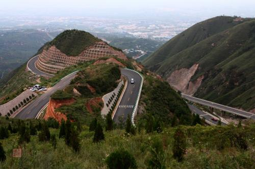
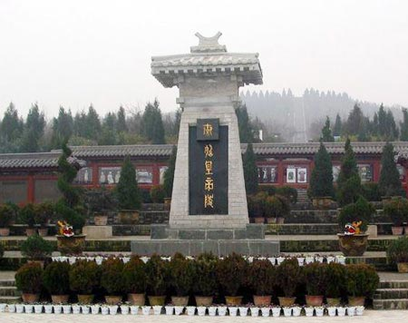
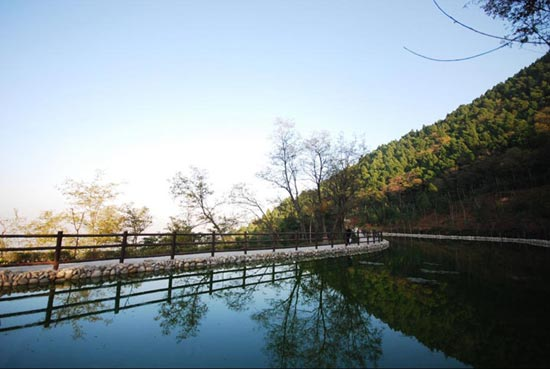
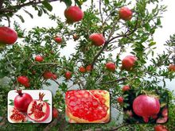
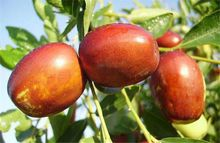
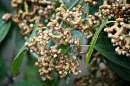
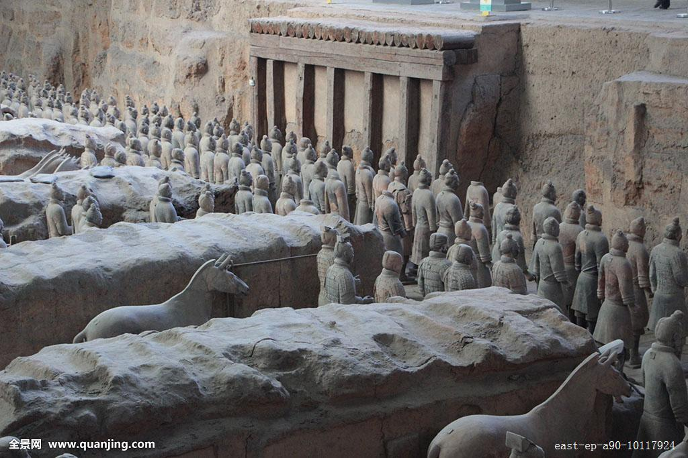
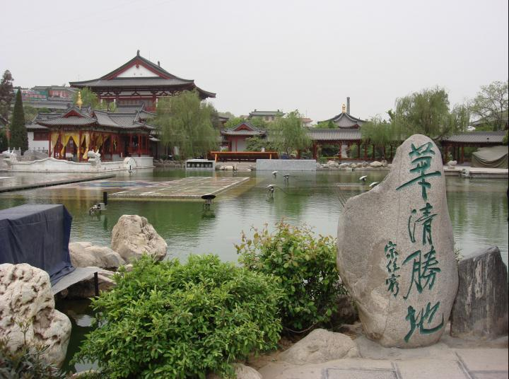
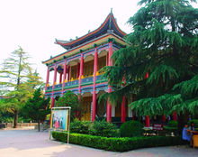

临潼简介
临潼，是一块古老神奇而又焕发着青春活力的土地，自周、秦到汉、唐，临潼一直为京畿之地，处于全国政治、经济、文化活动的中心。临潼是古都西安的东大门，距市中心30公里，总面积915平方公里。人口70多万，辖23个街道办事处、41个社区，226个行政村。
临潼素有“文物甲天下”的美誉，聚集了以秦始皇帝陵博物院为代表的一大批旷世罕见的国家级文物，形成了规模型旅游资源，其数量之大、种类之多、品味之高、组合之好，堪称世界之最。区内拥有国家级重点文物保护单位6处、省级文物保护单位3处、县级以上文物保护单位57处，其中秦始皇帝陵博物院、华清池是AAAAA级旅游景点，骊山国家森林公园是AAAA级旅游景点，临潼博物馆是AAA级旅游景点。如此丰厚的历史文化遗产，使得临潼成为神州大地旅游链上的一颗璀璨的明珠，并成为来陕游客的必游之地。2015年，全区主要旅游景区（点）累计接待游客2521万人次，其中境外游客177万人次，旅游综合收入19.49亿元。
在临潼这块神奇的土地上，中华民族曾用自己的生花妙笔绘出了一幅幅动天地、泣鬼神的宏伟画卷。女娲炼石补天、抟土造人，开创了中华民族繁衍生息的新纪元；周幽王在这里上演了一部“烽火戏诸候，千金买一笑”的历史荒诞剧；世界上规模最大、结构最奇特、内涵最丰富的秦始皇帝陵，充分表现了2000多年前中国人民巧夺天工的艺术才能，是中华民族的骄傲和宝贵财富；西楚霸王项羽为与刘邦争天下，在骊山脚下的鸿门堡设下暗藏杀机的“鸿门宴”，成就了汉室几百年江山；唐玄宗李隆基与贵妃杨玉环在这里演绎了一出千古绝唱的爱情悲剧，把一代君王的生死情殇推向了极致；抗日战争期间，爱国将领张学良、杨虎城为拯救民族危亡，在骊山脚下扯起“兵谏”大旗，逼蒋抗日，掀开了国共合作的新篇章……
改革开放以来，临潼积极实施旅游兴区战略，完成了从“事业接待型”到“一般产业型”再到培育“支柱产业型”的转变升级过程，形成了“秦风、唐韵、御温泉”三大旅游品牌。2008年5月，临潼被中国矿业联合会命名为“中国御温泉之都”；2011年1月临潼被国际文化旅游促进会、中国县域经济协会、中国旅游品牌协会联合授予“中国十佳生态休闲文化旅游城区”荣誉称号。2012年4月临潼被省政府正式命名为“陕西省旅游示范县”，也是西安市获准的唯一旅游示范区县。临潼旅游服务功能的日臻完善，带动和促进了相关产业的发展。旅游业已成为临潼社会经济发展的重要支柱产业。
随着市场经济的进一步深入，临潼区按照科学发展观的要求，正确审视临潼旅游产业及旅游目的地持续发展的过程和现状，强势启动了临潼国家旅游休闲度假区建设工作，大力进行旅游区域开发，强力整合旅游资源，努力破解临潼旅游发展过程中的瓶颈障碍，临潼旅游的腾飞将指日可待。
临潼，是一方孕育华夏文明的沃土，是一块充满千年帝王豪气的宝地，是一个让无数人魂牵扯梦绕的地方。
欢迎您到临潼来投资兴业，临潼是您快乐旅游的最佳选择！
地理环境
临潼地处关中平原中部，是古都西安的东大门，南依骊山，东邻渭南高新技术产业开发区，西邻浐灞生态区和新筑国际港务区，北邻阎良国家航空产业基地，地势南高北低，山塬川依次分布，分别占15%、18%、67%。全区总面积915平方公里，辖23个街道，总人口70多万，其中农业人口56.2万。临潼距西安市中心20多公里，境内公路、铁路纵横交错，西潼高速公路、108国道穿境而过，到咸阳国际机场仅需40分钟；陇海、西延等数十条铁路交汇成西北最大的新丰铁路编组站，2002年率先在全省实现了村村通油路的目标，物流畅通，交通运输条件十分便捷。

全区现有耕地78万亩，土壤肥沃，土质优良，土壤以娄土、黄土性土和瘀土为主，适宜种植作物有小麦、玉米、蔬菜等，主要特产有石榴、柿子、核桃和相枣等。自然条件优越，属大陆性暖温带季风气候，四季冷暖、干湿分明，光、热、水资源丰富。年平均气温13.5℃，无霜期219天，年降雨量591.8毫米。年日照时数2052.7小时，年总辐射量111.7千卡/平方米。境内有临河、潼河、零河等10余条河流，渭河穿境而过。水利设施齐备，农田灌溉方便，全区有效灌溉面积56.87万亩，其中节水灌溉面积54.9万亩，喷灌面积区1.67万亩，微灌面积1900亩。
临潼主产优质小麦和玉米，是国家重点粮食生产基地。渭河平原区优质粮食生产基地面积45万亩。全区年粮食种植面积110万亩，总产量38.56万吨。渭北农副产品加工基地被国家农业部命名为“国家农产品加工创业基地”。拥有面粉加工企业3家，年加工小麦15万吨，生产各种面粉10万吨，产值超过2亿元。
奶畜、杂果、蔬菜是临潼农业的三大特色产业，初步形成了渭河沿岸蔬菜瓜果经济带、渭北粮食、畜牧产业区、骊山北麓观光农业区和山塬林果生态农业区的产业发展布局。在渭河以北区域发展奶牛6.3万头，奶牛小区、大场100个，奶类年总产24.5万吨。拥有银桥﹑伊利泰普克、宏兴、金田4家乳品加工企业，年加工鲜奶能力45万吨，实际加工鲜奶22.5万吨，实现销售收入20亿。2006年被授予 “全国牛奶生产强区”称号。在沿山区域发展以石榴、火晶柿子、薄皮核桃为主的杂果14.1万亩，其中石榴面积10万余亩，年产鲜果10万余吨；火晶柿子面积1.4万亩，年产鲜果2万余吨。建成石榴酒加工企业3家，年加工鲜石榴2000吨；有火晶柿子加工企业2家，年加工柿子300余吨。临潼石榴、临潼火晶柿子双双荣获“国家地理标志原产地保护”认证。2004年，在全国石榴评比会上，“临选8号”临潼石榴荣获“优质石榴奖”。2007年，“临绿牌”石榴荣获“西安市名牌产品”。全区蔬菜常年种植面积15万亩，蔬菜总产量36.4万吨，主产西红柿、芹菜、大白菜、萝卜、西甜瓜、黄瓜、青菜、菜花、茄子等，形成了西阎路蔬菜、沿渭无公害蔬菜、山区有机蔬菜三大产业带。建成蔬菜大棚9000栋，发展保护地蔬菜种植面积3万亩。番茄制种面积8500亩，番茄制种量占全国市场60%以上，是全国最大的番茄制种基地。
临潼气候
临潼区位于东亚暖温带半湿润气候向内陆干旱气候的过渡带上，兼有两种气候的特点，属于大陆性暖温带季风气候。四季冷暖干湿分明：春季暖和，多风，干燥，回暖早，升温快；夏季炎热，日照长，多雨兼伏旱；秋季温暖，降温快，多阴雨；冬季寒冷，干燥，气温低而雨雪少。
行政区划
临潼区辖23个街道办事处：骊山街办、秦陵街办、斜口街办、行者街办、代王街办、新丰街办、零口街办、相桥街办、新市街办、栎阳街办、雨金街办、西泉街办、马额街办、徐杨街办、何寨街办、交口街办、油槐街办、北田街办、铁炉街办、任留街办、仁宗街办、小金街办、穆寨街办。
历史文化
临潼，是一块古老神奇而又焕发着青春活力的土地。临潼是十三朝古都西安的东大门，自周、秦到汉、唐，临潼一直为京畿之地，处于全国政治、经济、文化活动的中心地带。西安市临潼区位于西安市东部，距市中心20余公里。总面积915平方公里，人口70多万，辖23个街道办事处、41个社区，226个行政村。境内有秦兵马俑、华清池两个5A级景区。
说到临潼，这里曾是仰韶文化时期母系氏族部落先民生存繁衍的地方；这里曾是"烽火戏诸候"周幽王爱妃褒姒一笑失江山故事发生的地方；这里曾是早于咸阳成为先秦建都的地方；这里曾是"项庄舞剑，意在沛公"的鸿门宴发生的地方；这里曾是秦始皇历时39年修建气势庞大陵园的地方；这里曾是盛唐时期皇家园林所在地，是唐玄宗李隆基和杨贵妃恩爱缠绵、沐浴温泉的地方；这里曾是1936年西安事变中张学良、杨虎城将军对蒋介石实行兵谏，从而使我国形成抗日新局面的地方；这里还是国家级骊山风景名胜区和海内外驰名的旅游胜地……
先秦时，临潼称栎阳，公元前383年（秦献公二年）至公元前350年的34年中，栎阳是秦献公和秦孝公前期的秦国都城，当时这里的农业、手工业和商业十分发达，交通方便，民时在军事上也是进可攻、退可守的重镇。栎阳曾有过都城的繁盛时期。秦以后，项羽入关中，将其一分为三，其中一部分塞王司马欣就定都栎阳。 因此，在秦汉时期，栎阳都是经济、政治、文化发达的城镇。
秦始皇帝陵南依骊山，北眺渭水，风景秀丽，气势磅礴。据司马迁《史记·秦始皇本纪》记载，秦始皇的棺椁安置于三层皇水之下的墓穴，冢内修筑有百官宫观。墓内顶端有日月星辰，下有五岳九州。由于历史的沧桑变化，秦始皇帝陵原有的大规模的地面建筑早已荡然无存，而是星罗棋布的数百处的墓葬和陪葬坑等，还在不断进行着探测和发掘。现经过初步发掘并对外展出的兵马俑一、二、三号坑，只是其中的一部分。1987年秦始皇帝陵已被列入联合国教科文组织的世界遗产保护清单。秦始皇帝陵虽已有2000多年的历史，但是在今后的年代中，它仍将会发挥重大的历史作用。
华清池可谓闻名遐迩，根据考古资料，周幽王时就在此修建了骊宫，后延续到秦汉隋。在盛唐时期也是华清池的鼎盛阶段。唐玄宗李隆基在唐太宗、唐高宗营造宫殿的基础上，又进行了大规模扩建，并命名为"华清宫"。华清宫气势宏大，是一个布局严谨、富丽堂皇的大宫殿建筑群。在漫长的年月中，华清池经历了诸多朝代的更替，留下了大量的史料记载，既有君王贵妃花天酒地、纸醉金迷的日日夜夜，又有烽火战乱、剑拔弩张的惊心时刻。华清池经历了周秦汉唐，在中国古代史中留下了浓重的笔墨。到了近代，华清池又发生了决定中国历史命运的震惊中外的"双十二事变"。
新中国成立之后，临潼也获得了新生，经济社会都有了很大的发展。改革开放以来，临潼的发展一日千里，建设成就令人瞩目。绚丽的古代文明与璀璨的现代文明在这里交相辉映，相得益彰。1997年根据发展要求临潼区于6月25日经国务院批准正式撤县设区。
地方特产
临潼石榴
临潼三宝之一。临潼石榴具有悠久的历史，引进初期，先在京都长安御花园的“上林苑”和骊山的温泉宫内种植，是供皇子后妃观赏的。东晋潘岳称之为“天下之奇树，九洲之名果”。到了唐代，长安周围石榴栽种已有相当规模。临潼在长安以东二十五千米的地方，南依骊山，北跨渭河，自然条件极宜石榴生长，加之长期培育，形成临潼石榴的优良品种。石榴是陕西一大特产，它集全国石榴之优，素以色泽艳丽，果大皮薄，汁多味甜，核软鲜美，籽肥渣少，品质优良等特点而著称。名居全国五大名榴之冠，被列为果中珍品，历来是封建皇帝的贡品。
火晶柿子
临潼三宝之一。临潼出产的火晶柿子有它独特的品位。骊山气候温和，泉水滋润，汉唐以来就辟为皇家园林，果树栽培历史悠久，除了石榴有名，就要算火晶柿子了。火晶柿子因果实色红如火，果面光泽似水晶而得名。是临潼特有的柿子品种。果形扁圆，面为朱红色，细润而光滑，色泽艳丽，皮薄无核，果肉深红，浆汁丰满，大小均匀，平均果重65克。含可溶性固体物17%～19%，含糖量19%以上，单宁2.83%，维生素c每百克果肉中含10.89毫克，特别是含糖量极高，多为葡萄糖、果糖、蔗糖，酸味极低，吃起来特别甜，在水果中居于首位，被誉为“最甜的金果”。
临潼相枣
临潼三宝之一。相枣是临潼果树栽培历史悠久的果树之一，在相桥、康桥、新兴、武屯等乡镇一带广植。有枣树1304亩，1.95万余棵，丰年产量达10万多公斤。相枣以其个大、皮薄、肉厚、核小、甜脆而驰名。营养丰富，果肉内含有蛋白质、脂肪、碳水化合物和维生素等，特别是维生素C含量最高，比柑桔、苹果等水果的营养价值还要高，同时还含有钙、磷等矿物质。相枣除供鲜食外，多晒成干，作为加工糕点等食品的生产原料。
临潼拐枣
陕西话说拐枣，学名枳椇。有许多雅号，万子梨、蜜屈律、山林果、木蜜、木珊瑚、鸡距子、鸡爪子、万寿果、金钩子、金钩梨、梨枣、枸、鸡爪梨、鸡爪莲、臭杞子、莲庆、纠结子等。果实近球形，无毛，直径约7毫米，灰褐色。花期6月，果期8—10月。果实形态似万字符“卍”，故称万寿果。果柄含多量葡萄糖和苹果酸钾，经霜后甜，可生食或酿酒，俗称“拐枣”；果实入药，为清凉利尿药，并能解酒；“拐枣酒”能治风湿症；木材硬度适中，纹理美，供建筑及制家具和美术工艺品等的用材。
交通运输
公路
西潼高速公路、108国道穿临潼区境而过，到咸阳国际机场40分钟。
铁路
临潼火车站建于1934年，隶属西安铁路局，为三等站。
地铁
西安与临潼市域轨道交通，起点为西安地铁1号线纺织城站，终点设在临潼北二环，线路全长23.2千米，总投资约130亿元，2017年建成通车试运营。
西安市域快速轨道交通临潼线，起点为地铁1号线纺织城站，终点设在临潼秦汉大道。线路全长约25.92千米。
风景名胜
临潼区历史遗迹丰富，县级以上文物保护单位51处，其中省级5处。著名的“褒姒一笑失天下”、“鸿门宴”和震惊中外的“西安事变”等重大历史事件就发生在此。姜寨遗址是仰韶文化早期保存较为完整的历史遗迹。
秦始皇兵马俑（AAAAA级）
兵马俑是第一批全国重点文物保护单位，第一批中国世界遗产，位于今陕西省西安市临潼区秦始皇陵以东1.5千米处的兵马俑坑内。1961年3月4日，秦始皇陵被国务院公布为第一批全国重点文物保护单位。1974年3月，兵马俑被发现；1987年，秦始皇陵及兵马俑坑被联合国教科文组织批准列入《世界遗产名录》，并被誉为“世界第八大奇迹”，先后有200多位外国元首和政府首脑参观访问，成为中国古代辉煌文明的一张金字名片，被誉为世界十大古墓稀世珍宝之一。
华清池（AAAAA级）
华清池，又名华清宫，包括原骊山国家森林公园，与颐和园、圆明园、承德避暑山庄并称为中国四大皇家园林。华清宫，西距西安30千米，南依骊山，北面渭水，与“世界第八大奇迹”兵马俑相邻。为国家首批5A级旅游景区、全国重点风景名胜区、全国重点文物保护单位、国家级文化产业示范基地、国家地质森林公园。周、秦、汉、隋、唐等历代帝王在此建有离宫别苑。因其亘古不变的温泉资源、烽火戏诸侯的历史典故、唐玄宗与杨贵妃的爱情故事、“西安事变”发生地而享誉海内外，成为中国唐宫文化旅游标志性景区。
秦始皇陵（AAAA级）
秦始皇陵是中国历史上第一位皇帝嬴政（前259—前210年）的陵寝，中国第一批世界文化遗产、第一批全国重点文物保护单位、第一批国家AAAA级旅游景区，位于陕西省西安市临潼区城东5千米处的骊山北麓。秦始皇陵建于秦王政元年（前247年）至秦二世二年（前208年），历时39年，是中国历史上第一座规模庞大，设计完善的帝王陵寝。秦陵四周分布着大量形制不同、内涵各异的陪葬坑和墓葬，包括举世闻名的“世界第八大奇迹”兵马俑坑。秦始皇陵是世界上规模最大、结构最奇特、内涵最丰富的帝王陵墓之一。充分表现了2000多年前中国古代汉族劳动人民的艺术才能，是中华民族的骄傲和宝贵财富。
骊山风景区（AAAA级）
国家首批公布的风景名胜保护区。骊山是秦岭山脉的一个支脉，海拔1302米，是燕山晚期上升形成的突兀在渭河裂陷带内的一个孤立的地垒式断块山。
骊山自然景观秀丽，文物胜迹众多，有烽火台、老母殿、老君殿、晚照亭、兵谏亭、上善湖、七夕桥、尚德苑、遇仙桥、三元洞等众多景点。周、秦、汉、唐以来，一直作为皇家园林地。上古女娲在这里“炼石补天”；西周幽王在此上演了“烽火戏诸侯”；秦始皇将他的陵寝建在骊山脚下；盛唐时，唐玄宗与杨贵妃在此演绎了一场凄美的爱情故事；著名的“西安事变”也发生于骊山之上。
西安临潼博物馆
西安临潼博物馆是一所地志性历史博物馆，位于骊山脚下驰名中外唐华清宫东侧百余米处，建馆三十余年历史，收藏有上下五千年历史文物万余件，展出面积六百余平方米，设有五个陈列室，一个历代石雕碑廊，一个石雕明墓保护室。
唐佛艺术室陈列有国宝级文物十余件，金棺、银椁、舍利等珍贵文物。它于1985年5月5日出土于唐代庆山寺遗址，同兵马俑，铜车马同被称为陕西西安近年来三次重大考古发现，随之出土还有一百余件佛教文物珍品，释迦如来佛真身舍利，雕刻细腻的舍利宝帐，形神独具的唐三彩狮子等。
